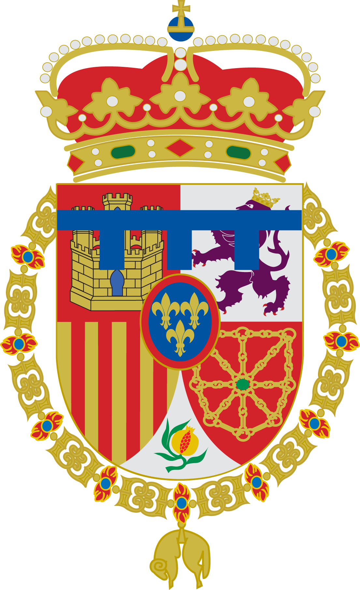
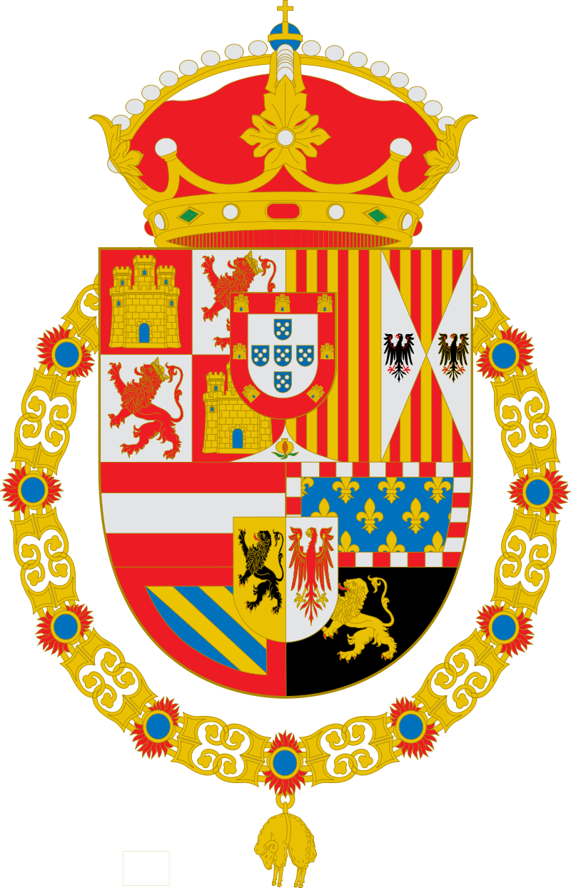
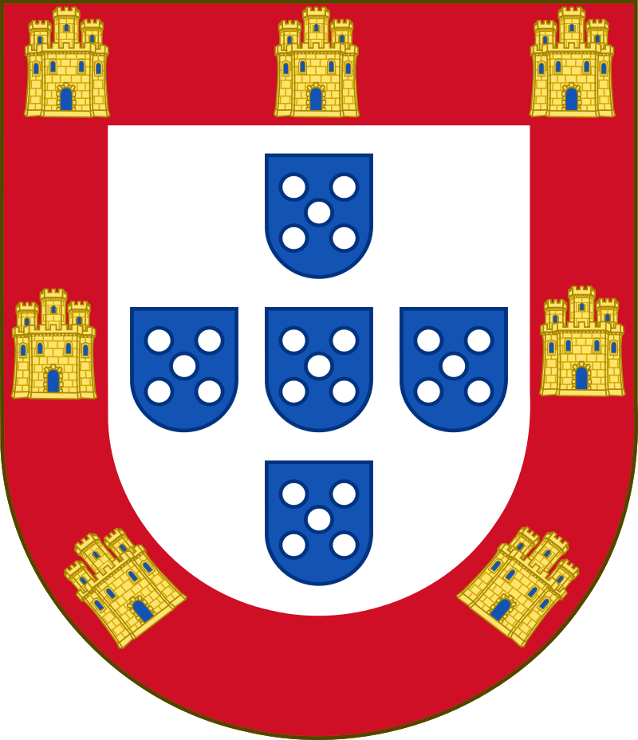
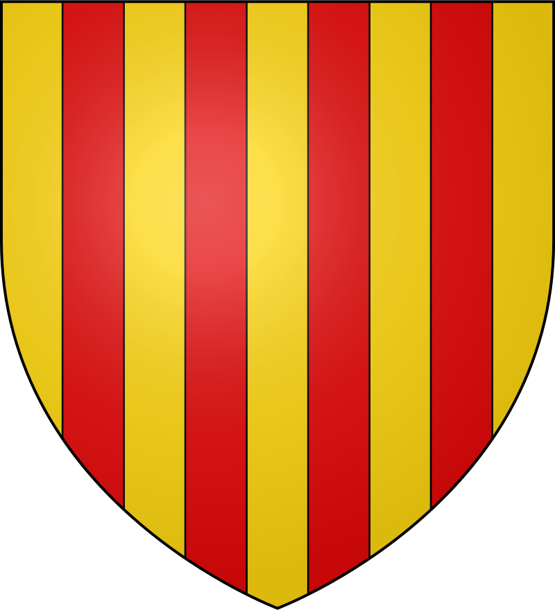

Felipe IV de España
Bienvenido a esta página informativa sobre el rey Felipe IV. En ella podrás conocer la historia de diversas etapas clave de su reinado.
Etapa de gobierno personal
Tras la caída de Olivares, el rey pareció decidido a llevar personalmente las tareas de Estado, pero pronto tomó la decisión de nombrar como valido a Luis Méndez de Haro, sobrino de Olivares, con el título de primer ministro. Su objetivo fue el de acabar con los conflictos interiores y alcanzar la paz en Europa.
Política interior
Las sublevaciones en Cataluña y Portugal continuaron, a las cuales se sumó Aragón. En Nápoles, en 1647, se produjo un levantamiento debido a la falta de alimentos, que se extendió por Sicilia, pero los amotinados fueron controlados por las autoridades locales. En Cataluña, la guerra se prolongó hasta que en 1652, tras 15 meses de asedio, Felipe IV logró tomar Barcelona. Ese mismo año por las ciudades andaluzas se produjeron pequeños levantamientos debido a la falta de pan, el descontento por la alteración de la moneda (moneda de vellón), la presión fiscal y las levas.
Política exterior
Tras la caída de Olivares los tercios españoles fueron vencidos por los franceses en la batalla de Rocroi en 1643. Por el Tratado de Westfalia, España reconocía la independencia de las Provincias Unidas y la conservación de Flandes. La guerra de Francia continuó por la exigencia planteada sobre Flandes, el Franco Condado, y el Rosellón. Como en Francia se produjo una guerra civil y ya se había firmado la paz con Holanda, la balanza se igualó y los españoles vencieron a los franceses en Valenciennes en 1656. Inglaterra y Francia pactaron en 1657 el reparto del Flandes español, así comenzaron unos fuertes ataques contra la Monarquía hispánica. La difícil situación económica en España y la derrota en la batalla de Dunkerque ante el ejército anglo-francés llevó al monarca a firmar la Paz de los Pirineos en 1659. Se cedía el Rosellón, la mitad de la Cerdańa, el Artois y otras plazas en el sur de esos territorios. Se estipuló también el casamiento de la infanta María Teresa de Austria, hija de Felipe IV, con Luis XIV de Francia. Así se impuso la hegemonía de Francia sobre España.
A continuación se muestran los títulos que ostentaba el Rey Felipe IV, así como sus predecesores y sucesores:
| Predecesor |
Título |
Sucesor |
| Felipe de Austria |
Príncipe de Asturias (1608-1621)  |
Baltasar Carlos de Austria |
| Felipe III |
Rey de España, Nápoles, Sicilia y Cerdeña y Duque de Milán  |
Carlos II |
| Felipe II |
Rey de Portugal  |
Juan IV |
| Isabel Clara Eugenia y Alberto de Austria |
Soberano de los Países Bajos y Conde de Borgoña |
Carlos III |
| Felipe II |
Conde de Barcelona  |
Carlos II |